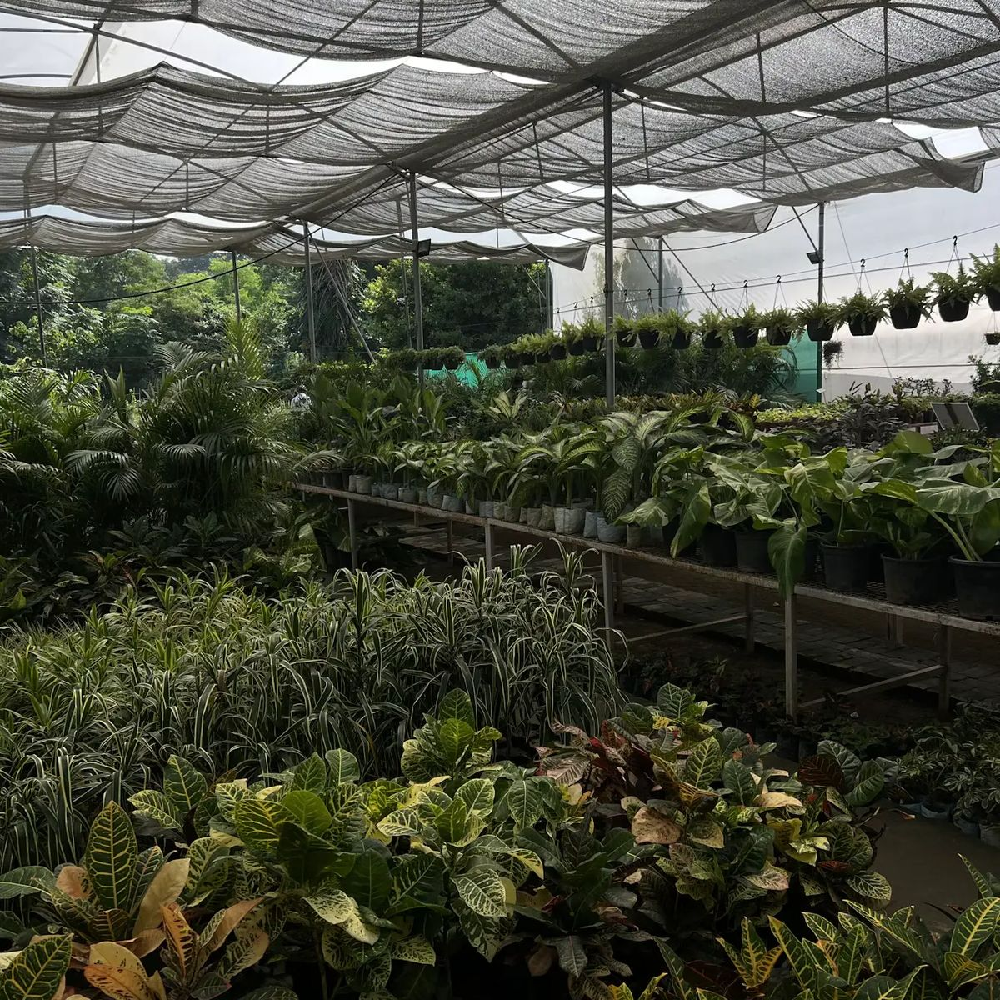

Berawal dari media tanam di Cipete.
Nurseri Lestari dikenal warga Cipete sebagai tempat beli media tanam, pupuk kandang, kompos, dan pot, dari pot plastik jumbo sampai gentong keramik. Waktu makin banyak orang berkebun di rumah, kami tambah tanaman hias, benih, dan perlengkapannya, lalu buka lapak di Tokopedia dan Shopee supaya yang di luar Cilandak juga kebagian.
Sekarang ada dua toko, Cipete dan Tangerang BSD, dengan 160-an produk. Di Instagram dan TikTok kami suka bagi tips singkat, soalnya pembeli yang paham cara rawat tanamannya biasanya balik lagi, dan senang.

Cipete & Tangerang BSDYang kami jaga tiap kali kirim pesanan.
Racikan yang kami pakai sendiri
Aroid mix, orchid mix, dan media siap pakai lainnya kami campur sendiri dari bahan yang kami pakai tiap hari di nursery. Pupuk, obat tanaman, dan benih datang dalam kemasan pabriknya, lengkap dengan labelnya.
Dibungkus kayak barang sendiri
Tanaman hidup dibungkus berlapis dan medianya diikat rapat supaya nggak tumpah di jalan. Untuk perjalanan jauh ada opsi extra packing.
Yang jawab WhatsApp ya yang ngurus tanamannya
Pertanyaan di WhatsApp dijawab oleh orang yang meracik media dan merawat tanaman di toko, bukan skrip balasan otomatis. Kirim saja foto tanamanmu.
Dua toko, tergantung lokasi kamu.
Jam bukanya sama, adminnya beda. Pilih yang paling dekat dari rumahmu.